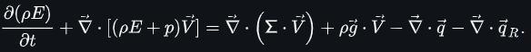

Comment fait le cinéma ?
Le cinéma, pour simuler de l’eau, peut s’appuyer sur des rendus 3D pré-calculés et des super-calculateurs qui lui permettent d’utiliser les équations de Navier-Stokes.
Les équations de Navier-Stokes en mécanique des fluides sont des équations qui décrivent le mouvement des fluides newtoniens.
Ces équations, beaucoup trop complexes,
Petit exemple :
vous comprenez quelque chose vous ? Parce que moi, non.
peuvent donc servir à simuler de l’eau très réaliste puisqu’elles permettent de gérer la fluidité, la viscosité, les propriétés thermodynamiques, les propriétés de transport, l’instabilité, les turbulences, les masses volumiques, ou même les conditions environnementales d’un fluide ou d’un gaz tout en prenant en compte gradion et laplacien.
Ces équations permettent de créer une eau très réaliste mais sont extrêmement gourmandes en ressources numériques puisqu'ils faut les appliquer à toutes les particules d'eau.
C’est pourquoi seulement les domaines possédant des super-calculateurs peuvent se permettre d’utiliser ces équations et même ces super-calculateurs ne pourraient pas créer cette eau photoréaliste si ils devaient le faire en temps réel.
Pour ceux qui souhaiteraient des informations plus précises.
Sujet du site Les équations de Navier-Stokes Lien du site https://fr.wikipedia.org/wiki/Équations_de_Navier-Stokes#